manifolds
grassmann-sampling
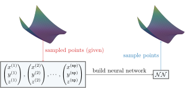
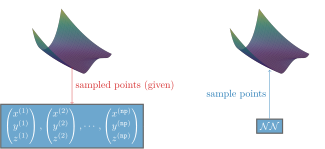
grassmann-sampling: We can build a neural network that creates new samples from an unknown distribution.
light: PDF · SVG · PNG 150 · 300 · 600


dark: PDF · SVG · PNG 150 · 300 · 600


skew-sym-visualization
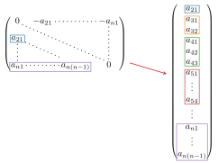
skew-sym-visualization: The elements of a skew-symmetric matrix (and other special matrices) are stored as a vector. The elements of the big vector are the entries on the lower left of the matrix, stored row-wise.
light: PDF · SVG · PNG 150 · 300 · 600


dark: PDF · SVG · PNG 150 · 300 · 600


tangent-vector
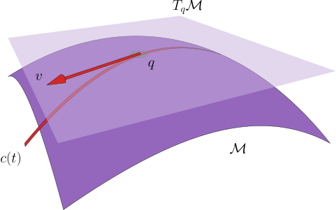
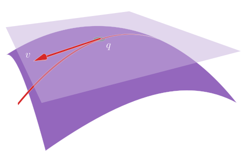
tangent-vector: Weights can be put on manifolds to achieve structure preservation or improved stability.
light: PDF · SVG · PNG 150 · 300 · 600


dark: PDF · SVG · PNG 150 · 300 · 600


homogeneous-space

homogeneous-space: A two-dimensional manifold M embedded in ℝ³, the surface on which the homogeneous-space figures are drawn.
light: PDF · SVG · PNG 150 · 300 · 600


dark: PDF · SVG · PNG 150 · 300 · 600


homogeneous-space-action
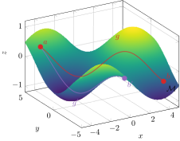
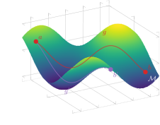
homogeneous-space-action: A homogeneous space: group elements g and g′ carry the same point a to two different targets b and b′, so the action is transitive.
light: PDF · SVG · PNG 150 · 300 · 600


dark: PDF · SVG · PNG 150 · 300 · 600


lie-group-venn
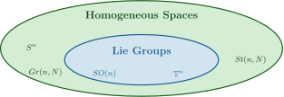
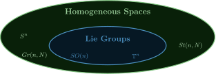
lie-group-venn: Every Lie group is a homogeneous space, but not conversely: SO(n) and 𝕋ⁿ are Lie groups, while Sⁿ, Gr(n, N) and St(n, N) are homogeneous spaces that are in general not Lie groups.
light: PDF · SVG · PNG 150 · 300 · 600


dark: PDF · SVG · PNG 150 · 300 · 600


lie-group
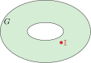
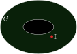
lie-group: A Lie group G drawn as a torus, with its identity 𝕀.
light: PDF · SVG · PNG 150 · 300 · 600


dark: PDF · SVG · PNG 150 · 300 · 600


lie-algebra
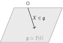
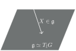
lie-algebra: The Lie algebra 𝔤 ≃ T_𝕀 G as a plane through the origin 𝕆, with an element X.
light: PDF · SVG · PNG 150 · 300 · 600


dark: PDF · SVG · PNG 150 · 300 · 600


lie-algebra-representation
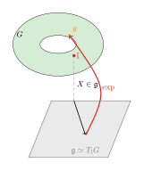
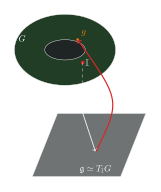
lie-algebra-representation: The Lie algebra 𝔤 as the tangent space of the Lie group G at the identity, and the exponential map that sends X ∈ 𝔤 to an element g of G.
light: PDF · SVG · PNG 150 · 300 · 600


dark: PDF · SVG · PNG 150 · 300 · 600


projected-diagram
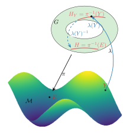
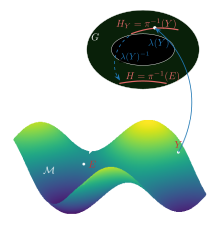
projected-diagram: The projection π: G → M of a homogeneous space, the fibres H = π⁻¹(E) and H_Y = π⁻¹(Y), and a section λ with λ(Y)⁻¹ carrying H_Y onto H.
light: PDF · SVG · PNG 150 · 300 · 600


dark: PDF · SVG · PNG 150 · 300 · 600


tangent-space

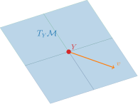
tangent-space: The tangent space T_Y M at a point Y of a manifold, with a tangent vector v.
light: PDF · SVG · PNG 150 · 300 · 600


dark: PDF · SVG · PNG 150 · 300 · 600


manifold-with-tangent-space
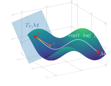
manifold-with-tangent-space: A manifold M with the tangent space T_Y M at Y, a tangent vector v, and the curve exp(t·log(g)) from Y to b.
light: PDF · SVG · PNG 150 · 300 · 600


dark: PDF · SVG · PNG 150 · 300 · 600


manifold-with-tangent-space-e
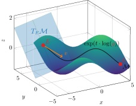
manifold-with-tangent-space-e: A manifold M with the tangent space T_E M at the distinguished point E, a tangent vector v, and the curve exp(t·log(g)) from E to b.
light: PDF · SVG · PNG 150 · 300 · 600


dark: PDF · SVG · PNG 150 · 300 · 600


homogeneous-geodesics
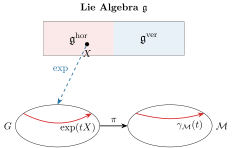
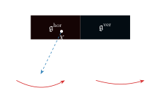
homogeneous-geodesics: A geodesic on a homogeneous space: X ∈ 𝔤^hor is exponentiated to the curve exp(tX) in G, which π maps to the geodesic γ_M(t) in M.
light: PDF · SVG · PNG 150 · 300 · 600


dark: PDF · SVG · PNG 150 · 300 · 600


skew-sym-projection


skew-sym-projection: A general n × n matrix and the skew-symmetric matrix built from its strictly lower triangle: the diagonal is zero and the upper triangle is the negated transpose of the lower one.